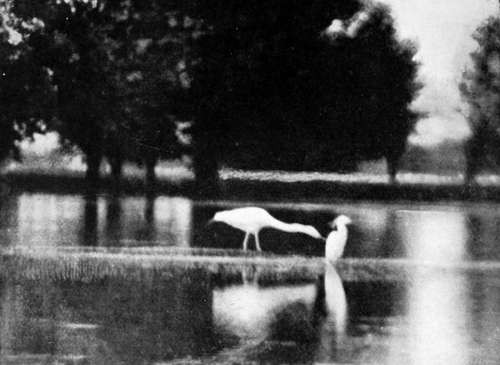
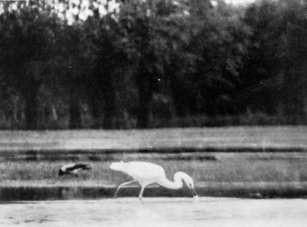
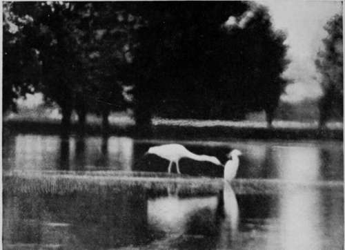
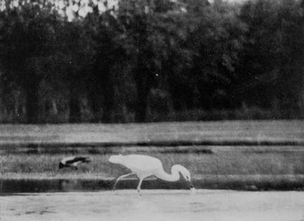

The Search After The Great White Heron. Part 6
Description
This section is from the book "Bird-Hunting Through Wild Europe", by R. B. Lodge. Also available from Amazon: Bird-Hunting Through Wild Europe.
The Search After The Great White Heron. Part 6
As I expected, a close cross-examination brought out the fact that they had never found any nests at all, and I firmly believe they had never even attempted to look. They had brought me to this place 'on spec.', trusting to my finding something. In fact, they had behaved exactly as Turks generally may be expected to behave, whatever their station in life.
Pelicans were frequently to be seen on the lake, and no doubt they breed somewhere in the impenetrable swamps, submerged forests, and morasses to be found on the low-lying Albanian side of the lake; but as I had already found them breeding farther south I did not trouble further about them. I had no doubt that the Great White Heron, too, must be nesting in similar situations; but the difficulty was how to search such a labyrinth, especially as the fishermen absolutely refused to take me out farther away from the town. They said that if they were to be seen searching about with Christians we should all certainly be shot by the people inhabiting the country between the lake and the hills.
In the meantime I had noticed that several White Herons were in the habit of feeding close to the Custom-house in the very early morning, where the water is shallow, and as there was a belt of willow-trees which would serve to hide behind, I determined to try to photograph them there.
The next morning I succeeded in photographing Ardea alba, fishing in this spot, and had the best view I had yet been able to have of their method of feeding. For close to my hiding-place I was able to watch three different species of Herons and to compare their behaviour.
The common Grey Heron (Ardea cinerea) stood in its usual and well-known position, motionless and expectant, ready to make a lightning-like stroke with its pointed beak the moment any unwary fish or frog should approach it. Ardea alba, on the contrary, stalked rapidly hither and thither, never stopping still but always in motion, snapping quickly to right and left as it went, at small fry, aquatic insects and suchlike, while Ardea garzetta, the Little Egret, fairly ran through the water, using its wings to help it along when it saw anything likely to escape at a little distance, in its eagerness to secure it.
Great White Heron And Little Egret
Great White Heron Feeding (Ardea Alba)
Ardea alba had been described to me as an awkward-looking bird, and certainly some of its postures are ungainly; but at other times, especially when, with neck arched ready for the stroke, and uplifted foot, it advances deliberately through the water, it is the perfection of grace and beauty, while its snowy plumage adds much to its appearance, whether seen against a background of reeds or willows, or wading in water with dark reflections. The dorsal plumes hang over the tail, giving it a Crane-like look, so that I could find some excuse for their being called 'White Cranes' in a book on Albania and Scutari which I have lately read.
At this point Djouraschkovitch, who had been in a 'blue funk' all the time we had been in Scutari, positively refused to stop there any longer. Never again, he said, would he put foot inside this place, not even if I gave him £5 a day. And as I had given up by now all hope of doing any more or frog should approach it. Ardea alba, on the contrary, stalked rapidly hither and thither, never stopping still but always in motion, snapping quickly to right and left as it went, at small fry, aquatic insects and suchlike, while Ardea garzetta, the Little Egret, fairly ran through the water, using its wings to help it along when it saw anything likely to escape at a little distance, in its eagerness to secure it.
Great White Heron And Little Egret
Great White Heron Feeding (Ardea Alba)
Ardea alba had been described to me as an awkward-looking bird, and certainly some of its postures are ungainly; but at other times, especially when, with neck arched ready for the stroke, and uplifted foot, it advances deliberately through the water, it is the perfection of grace and beauty, while its snowy plumage adds much to its appearance, whether seen against a background of reeds or willows, or wading in water with dark reflections. The dorsal plumes hang over the tail, giving it a Crane-like look, so that I could find some excuse for their being called ' White Cranes' in a book on Albania and Scutari which I have lately read.
At this point Djouraschkovitch, who had been in a 'blue funk' all the time we had been in Scutari, positively refused to stop there any longer. Never again, he said, would he put foot inside this place, not even if I gave him £5 a day. And as I had given up by now all hope of doing any more good there I consented to leave as soon as we could pack and make arrangements for horses for the return journey.
It was determined to ride to a small village on the frontier which I had visited before, there being there an undisturbed marsh, which I thought would be the most likely place to find such shy birds as those I was in search of.
We had the usual difficulties on the journey, increased by the fortnight's heavy rain. One deep ford was so swollen that our progress was delayed for some time, while we tried in vain to find a safe place to cross. Eventually we succeeded in doing so, but the horses were almost carried off their feet by the heavy water. Then, while waiting for the ferry over the Bojana, one of the men, a mountaineer in charge of one of the pack-horses, met an enemy who used some threats towards him. 'All right,' said the man, who for a wonder carried no arms, you can kill me if you like, as I am unarmed, but if you do, 2,000 of my clan will come and have their revenge.'
Continue to:
- prev: The Search After The Great White Heron. Part 5
- Table of Contents
- next: The Search After The Great White Heron. Part 7